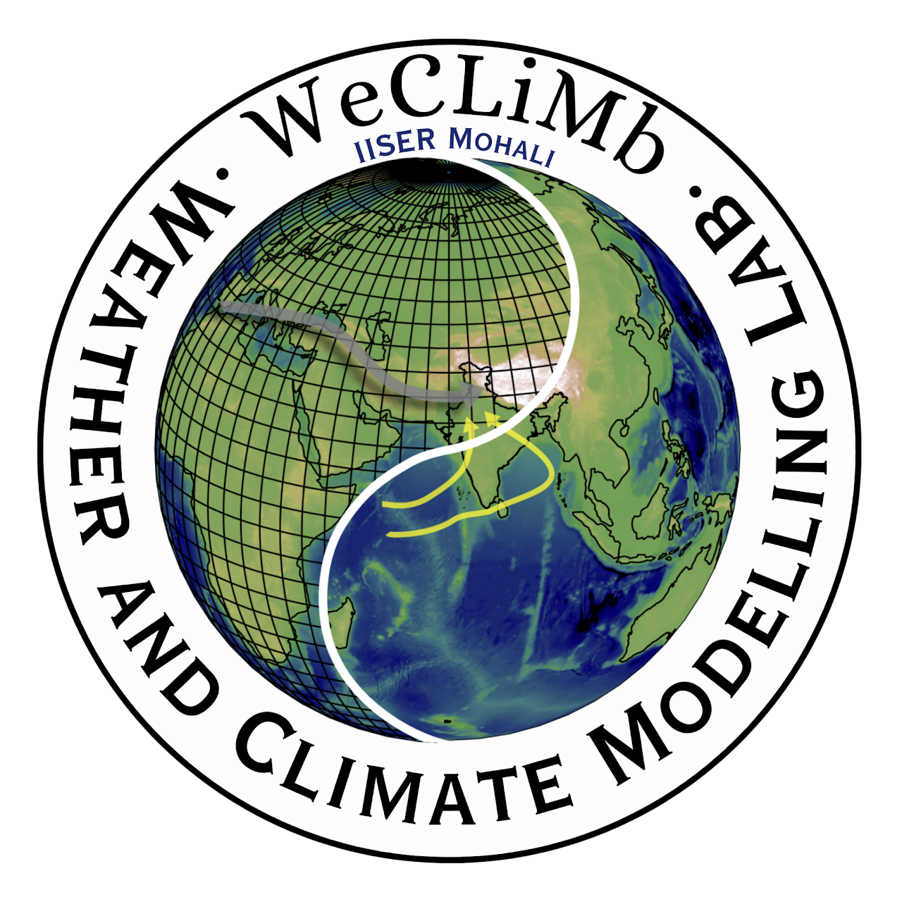

Climate Diagnostics Toolkit 
Contents:
API Reference
climate_diagnostics package
Climate Diagnostics Toolkit
climate_diagnostics
View page source
climate_diagnostics
climate_diagnostics package
Subpackages
climate_diagnostics.TimeSeries package
Submodules
climate_diagnostics.plots package
Submodules